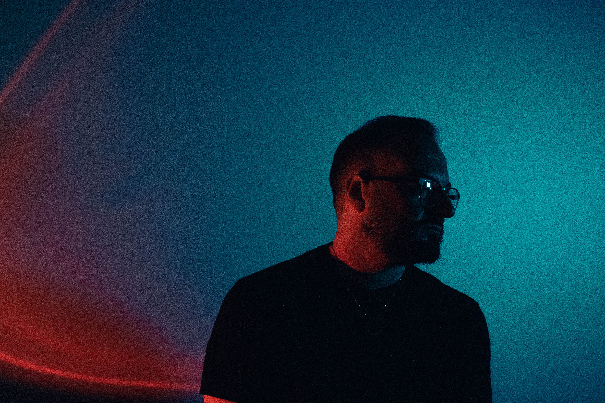

01
Strumento
Per chi vuole abitare la musica con più libertà: tecnica, ascolto e intenzione.
Vedi percorso ↗Musicista · Docente · Producer
Un luogo per imparare, studiare e ascoltare le proprie idee.

Lezioni individualizzate per sviluppare il tuo suono.
Costruiamo insieme il tuo percorso ↗Per chi vuole abitare la musica con più libertà: tecnica, ascolto e intenzione.
Vedi percorso ↗Dall’idea alla forma: lavoriamo su armonia, struttura e ricerca della propria voce.
Vedi percorso ↗Un confronto concreto per progetti, portfolio, concerti e prossimi passi.
Vedi percorso ↗Concerti, set intimi e incontri dal vivo. Qui trovi le prossime occasioni per ascoltare il progetto in movimento.
Produco e accompagno progetti musicali dalla prima intuizione al master: arrangiamento, suono e direzione.
Una visione condivisa per trovare il carattere di ogni brano.
Struttura, strumenti e dettagli che fanno respirare la canzone.
Un ascolto esterno per chiudere il progetto con lucidità.
Una pratica personalizzata per sviluppare tecnica, ascolto e presenza, senza perdere il piacere di suonare.
Parliamone ↗Un laboratorio per trasformare intuizioni, armonie e parole in una forma che ti rappresenti.
Parliamone ↗Un confronto concreto su portfolio, live, release e prossimi passi del tuo progetto.
Parliamone ↗La tecnica è un mezzo, non il traguardo.
Ogni percorso parte da una domanda e arriva a un gesto più consapevole. Il mio lavoro è creare le condizioni perché quel gesto possa emergere.
Hai un’idea musicale? Parliamone.
ciao@studiosonoro.it ↗